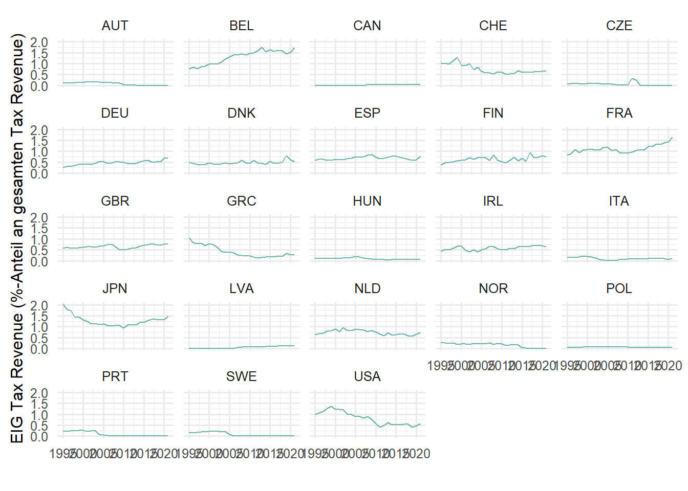
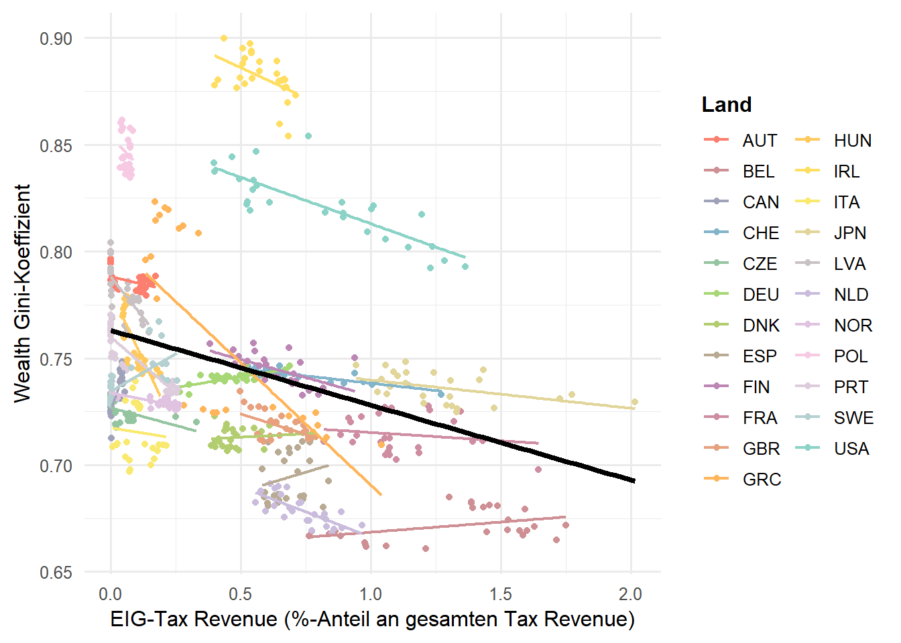

# devtools::install_github('Mikata-Project/ggthemr')
if(!require("pacman")) {install.packages("pacman");library(pacman)}
p_load(here, tidyverse, countrycode, readxl, scales, patchwork, readxl, rio, plm, lmtest, vdemdata, wid, sjPlot, vtable, Amelia, stargazer, sandwich)From Tax to Equality
Replikationsberichtfile für die Masterhausarbeit im Modul 3: Normative und positive politische Theorie
1 Einführung in den Replikationsbericht
1.1 Verwendung des Berichts als HTML
Dieses HTML-Dokument wurde mit Quarto für R erstellt. Diese HTML-Datei kann über Firefox oder jeden chromium-basierten Browser (Google Chrome, Microsoft Edge, etc) lokal und sicher geöffnet werden. Mit dieser kann jeder Schritt der Analyse nachvollzogen werden. An der Rechten Seite kann mithilfe des interaktiven Inhaltsverzeichnisses einfach zu den verschiedenen Kapiteln navigiert werden.
1.2 Verwendung des Quarto-Dokuments (HA_Justice.qmd) in RStudio
Das qmd. sollte in der Lage sein, den finalen Datensatz “equaltax_balanced.csv” beim Ausführen in RStudio aus dem Verzeichnis zu importieren und alle Berechnungen auszuführen. Zudem können im HTML-Dokument die Ergebnisse der Berechnungen eingesehen und alle Schritte nachvollzogen werden. Während des Bearbeitungsprozesses wurden diverse Datensetze getestet in verschiedenen Konfigurationen. Überbleibsel davon sind noch im Code vorhanden. Der korrekte Datensatz, der zur Analyse benutzt wurde, wurde am Ende des Kapitel “Data Preparation” erstellt. Dieser kann ab Kapitel 3 “Descriptive Statistics” einfach importiert werden und für alle folgenden Analysen verwendet werden. Der Vorbereitungscode muss daher nicht extra ausgeführt werden.
Wichtig
Dazu muss der gesamte Ordner “Schwarz_TaxtoEquality_HA-Replikation” als Projekt in R geöffnet werden und dieser zuvor vollständig heruntergeladen worden sein.
2 Setup
3 Data Preparation
3.1 Import Datasets
3.1.1 Import WID Dataset
# install.packages("devtools")
# devtools::install_github("WIDworld/wid-r-tool")
# Define the specific function for low code download of the WID dataset
wid_downloader <- function(indicator, population, name){
df <- download_wid(
indicators = indicator,
areas = "all",
years = "all",
perc = population,
ages = "992",
pop = "j",
metadata = FALSE,
include_extrapolations = TRUE,
verbose = FALSE
)
filtered_df <- df %>%
rename_with(~ name, .cols = "value") %>%
select(-variable, -percentile)
var_name <- paste0("WID_", name)
assign(var_name, filtered_df, envir = .GlobalEnv)
}
# Download the indicators
## Wealth Inequality Measures
wid_downloader("ghweal", "p0p100", "Wealth_Gini") # Wealth Gini coefficients
wid_downloader("shweal", "p0p50", "Wealth_Share_bottom50") # Wealth Share of the bottom 50%
wid_downloader("shweal", "p90p100", "Wealth_Share_top10") # Wealth Share of the top 10%
wid_downloader("shweal", "p99p100", "Wealth_Share_top1") # Wealth Share of the top 1%
## Income Inequality Measures
wid_downloader("gdiinc", "p0p100", "IncomePost_Gini") # Post-tax income Gini coefficients
wid_downloader("gptinc", "p0p100", "IncomePre_Gini") # Pre-tax income Gini coefficients
wid_downloader("scainc", "p0p50", "IncomeDispPost_Share_bottom50") # Post-tax disposale income share of the bottom 50%
wid_downloader("scainc", "p90p100", "IncomeDispPost_Share_top10") # Post-tax disposale income share of the top 10%
wid_downloader("scainc", "p99p100", "IncomeDispPost_Share_top1") # Post-tax disposale income share of the top 1%
# Join all the dataframes
WID_dfs_full <- list(WID_Wealth_Gini, WID_Wealth_Share_bottom50, WID_Wealth_Share_top10, WID_Wealth_Share_top1)
WID_dfs_gini <- list(WID_Wealth_Gini)
WID_sublister <- function(list, df_name){
df <- reduce(list, inner_join, by = c("country", "year"))
df$iso3c <- countrycode(df$country, "iso2c", "iso3c")
filtered_df <- df %>%
rename( Country = iso3c,
Year = year) %>%
select(-country)
assign(df_name, filtered_df, envir = .GlobalEnv)
}
WID_sublister(WID_dfs_full, "WID_full")
WID_sublister(WID_dfs_gini, "WID_gini")
rm(WID_Wealth_Share_top1, WID_Wealth_Share_top10, WID_Wealth_Share_bottom50, WID_Wealth_Gini, WID_IncomeDispPost_Share_top1, WID_IncomeDispPost_Share_top10, WID_IncomeDispPost_Share_bottom50, WID_IncomePost_Gini, WID_IncomePre_Gini, list_of_WID_dfs, name, WID_dfs_full, WID_dfs_gini)
write.csv(WID_gini, "data/processed_data/WID_Inequality_gini.csv")
write.csv(WID_full, "data/processed_data/WID_Inequality_full.csv")3.1.2 Import OECD Tax Revenue Data
OECD_TaxRev_Raw <- read_csv(here("data", "OECD", "OECD_TaxRev_on_EIG.csv"))
Data_Prep_oecd <- function(dataset, tax_code, tax_var){
for(i in tax_code){
# Filter the dataframe and select necessary columns
filtered_df <- dataset %>%
filter(GOV == "NES", TAX == i, VAR == tax_var) %>%
select(c("COU", "Country", "Year", "Value", "GOV", "Level of government", "TAX", "Tax revenue", "VAR", "YEA"))
# Get the unique value from the "Tax revenue" column and prepend "OECD_"
var_name <- paste0("OECD_TaxRev_", as.character(substr(as.character((unique(filtered_df$"Tax revenue"))), start = 1, stop = 4)))
# Rename the 'Value' column and select necessary columns
filtered_df <- filtered_df %>%
rename(!!unique(filtered_df$"Tax revenue") := Value) %>%
select(-c("GOV", "Level of government", "Tax revenue", "TAX", "YEA", "VAR"))
# Assign the dataframe to a new variable with the name stored in var_name
assign(var_name, filtered_df, envir = .GlobalEnv)
}
}
OECD_TaxRev_Variables <- (c("1000", "2000", "3000", "4000", "4100", "4200", "4300", "5000", "6000"))
# Run the function to prepare the data
Data_Prep_oecd(OECD_TaxRev_Raw, OECD_TaxRev_Variables, "TAXPER") # TaxRev of Total TaxRev in Percent
Data_Prep_oecd(OECD_TaxRev_Raw, "TOTALTAX", "TAXGDP") # Total TaxRev of GDP in Percent
# Join all the dataframes
list_of_OECD_dfs <- list(OECD_TaxRev_1000, OECD_TaxRev_2000, OECD_TaxRev_3000, OECD_TaxRev_4000, OECD_TaxRev_4100, OECD_TaxRev_4200, OECD_TaxRev_4300, OECD_TaxRev_5000, OECD_TaxRev_6000, OECD_TaxRev_Tota)
OECD_TaxRev <- reduce(list_of_OECD_dfs, inner_join, by = c("Country", "Year", "COU"))
OECD_TaxRev <- OECD_TaxRev %>%
rename( "Country_Name" = "Country",
"Country" = "COU",
"TaxRev_Income_IPC_1000" = "1000 Taxes on income, profits and capital gains",
"TaxRev_Social_SSC_2000" = "2000 Social security contributions (SSC)",
"TaxRev_Payroll_PW_3000" = "3000 Taxes on payroll and workforce",
"TaxRev_Property_4000" = "4000 Taxes on property",
"TaxRev_ImmovProp_4100" = "4100 Recurrent taxes on immovable property",
"TaxRev_NetWealth_4200" = "4200 Recurrent taxes on net wealth",
"TaxRev_EIG_4300" = "4300 Estate, inheritance and gift taxes",
"TaxRev_GoodsServices_5000" = "5000 Taxes on goods and services",
"TaxRev_Others_6000" = "6000 Taxes other than 1000, 2000, 3000, 4000 and 5000",
"TaxRev_TotalofGDP" = "Total tax revenue")
rm(OECD_TaxRev_1000, OECD_TaxRev_2000, OECD_TaxRev_3000, OECD_TaxRev_4000, OECD_TaxRev_4100, OECD_TaxRev_4200, OECD_TaxRev_4300, OECD_TaxRev_5000, OECD_TaxRev_6000, list_of_OECD_dfs, OECD_TaxRev_Raw, OECD_TaxRev_Variables, OECD_TaxRev_Tota)
write.csv(OECD_TaxRev, "data/processed_data/OECD_TaxRev.csv")3.1.3 Import World Bank Indicators
WB_Unemployment <- read_csv(here("data", "World Bank","WB_Unemployment.csv"), skip = 4)
WB_Unemployment <- WB_Unemployment %>%
pivot_longer(-c("Country Name", "Country Code", "Indicator Name", "Indicator Code"), names_to = "Year", values_to = "Anzahl") %>%
rename(Country = "Country Code",
Unemployment_rate = "Anzahl") %>%
mutate(Year = as.double(Year)) %>%
select(Country, Year, Unemployment_rate)
WB_GDP_constant <- read_csv(here("data", "World Bank","WB_GDP_ConstantUSD.csv"), skip = 4)
WB_GDP_constant_long <- WB_GDP_constant %>%
pivot_longer(-c("Country Name", "Country Code", "Indicator Name", "Indicator Code"), names_to = "Year", values_to = "Anzahl") %>%
rename(Country = "Country Code",
GDP_constant = "Anzahl") %>%
mutate(Year = as.double(Year),
GDP_constant_billions = GDP_constant / 1e9) %>%
select(Country, Year, GDP_constant_billions)
WB_GDP_current <- read_csv(here("data", "World Bank","WB_GDP_CurrentUSD.csv"), skip = 4)
WB_GDP_current_long <- WB_GDP_current %>%
pivot_longer(-c("Country Name", "Country Code", "Indicator Name", "Indicator Code"), names_to = "Year", values_to = "Anzahl") %>%
rename(Country = "Country Code",
GDP_current = "Anzahl") %>%
mutate(Year = as.double(Year),
GDP_current_billions = GDP_current / 1e9) %>%
select(Country, Year, GDP_current_billions)
WB_GDP_long <- inner_join(WB_GDP_constant_long, WB_GDP_current_long, by = c("Country", "Year"))
WB <- inner_join(WB_Unemployment, WB_GDP_long, by = c("Country", "Year"))
rm(WB_GDP_constant, WB_GDP_constant_long, WB_GDP_current, WB_GDP_current_long, WB_Unemployment, WB_GDP_long)
write.csv(WB, "data/processed_data/WB_Indicators.csv")3.1.4 Import GC Tax Dataset
# Import the dataset
GC_EIGTopRate <- read_delim(here("data", "GC Tax", "GC_TopMarginalEIGRates.csv"), delim = ";")
# Replace comma with dot and convert string to numeric
GC_EIGTopRate$Value <- as.numeric(gsub(",", ".", GC_EIGTopRate$Value))
# Convert ISO 2-letter codes to ISO 3-letter codes
GC_EIGTopRate$Country <- countrycode(GC_EIGTopRate$Country1, "country.name", "iso3c")
# Get the unique value from the "Tax revenue" column and prepend "OECD_"
var_name <- paste0("GC_", as.character(as.character((unique(GC_EIGTopRate$"Threshold vs Marginal (Thresholds)")))))
GC_EIGTopRate <- GC_EIGTopRate %>%
select(Country, Year, Value) %>%
rename_with(~ var_name, .cols = "Value")
rm(var_name)
write.csv(GC_EIGTopRate, "data/processed_data/GC_EIGTopRate.csv")3.1.5 Import VDEM Data
# First, you need to have the devtools package installed
# now, install the vdemdata package directly from GitHub
#devtools::install_github("vdeminstitute/vdemdata")
VDEM <- vdem %>%
select(c(country_text_id, year, v2peedueq, v2x_corr, v2x_libdem)) %>%
rename( "Country" = "country_text_id",
"Year" = "year")
write.csv(VDEM, "data/processed_data/VDEM.csv")3.1.6 Import Welfare Regimes
Regime <- read_delim(here("data", "Welfare_Regimes","welfare_regimes_Main.csv"), delim = ";")
# Convert ISO 2-letter codes to ISO 3-letter codes
Regime$Country_Code_2 <- countrycode(Regime$Country_Name, "country.name", "iso3c")
Regime <- Regime %>%
rename( "Country" = "Country_Code_2",
"Country_Name" = "Country_Name",
"welfare_regime" = "welfare_type") %>%
select(Country, welfare_regime)
write.csv(Regime, "data/processed_data/Welfare_Regimes.csv")3.2 Merge Datasets
# Join all the dataframes
dfs_all <- list(OECD_TaxRev, WID_full, VDEM, WB)
tax_all <- reduce(dfs_all, inner_join, by = c("Country", "Year"))
dfs_minimal <- list(OECD_TaxRev, WID_gini, VDEM, WB)
tax_minimal <- reduce(dfs_minimal, inner_join, by = c("Country", "Year"))
tax_minimal_regime <- merge(tax_minimal, Regime, by = c("Country"))
tax_all_regime <- merge(tax_all, Regime, by = c("Country"))
rm(WID_full, WID_gini, OECD_TaxRev, VDEM, WB, dfs_all, dfs_minimal, GC_EIGTopRate)
write.csv(tax_minimal, "data/processed_data/tax_minimal.csv")
write.csv(tax_all, "data/processed_data/tax_all.csv")
write.csv(tax_minimal_regime, "data/processed_data/tax_minimal_regime.csv")
write.csv(tax_all_regime, "data/processed_data/tax_all_regime.csv")3.3 Perfom Multiple Imputation
# Imputation for tax_minimal_regime -dataset
tax_minimal_regime <- read_csv(here("data", "processed_data", "tax_minimal_regime.csv"))
tax_minimal_regime_imp0 <- tax_minimal_regime %>%
select(-Country_Name, -welfare_regime)
tax_minimal_regime_imp0 <- as.data.frame(tax_minimal_regime_imp0)
tax_minimal_regime_imp <- amelia(tax_minimal_regime_imp0, m = 5, ts = "Year", cs = "Country")
tax_minimal_regime_imp_data_1 <- tax_minimal_regime_imp$imputations$imp1
tax_minimal_regime_imp_data_2 <- tax_minimal_regime_imp$imputations$imp2
tax_minimal_regime_imp_data_3 <- tax_minimal_regime_imp$imputations$imp3
tax_minimal_regime_imp_data_4 <- tax_minimal_regime_imp$imputations$imp4
tax_minimal_regime_imp_data_5 <- tax_minimal_regime_imp$imputations$imp5
plot(density(tax_minimal_regime$Unemployment_rate, na.rm=TRUE))
lines(density(tax_minimal_regime_imp$imputations$imp1$Unemployment_rate), col="red", lty=3, lwd=2)
lines(density(tax_minimal_regime_imp$imputations$imp2$Unemployment_rate), col="green", lty=3, lwd=2)
lines(density(tax_minimal_regime_imp$imputations$imp3$Unemployment_rate), col="blue", lty=3, lwd=2)
lines(density(tax_minimal_regime_imp$imputations$imp4$Unemployment_rate), col="orange", lty=3, lwd=2)
lines(density(tax_minimal_regime_imp$imputations$imp4$Unemployment_rate), col="purple", lty=3, lwd=2)
plot(density(tax_minimal_regime$GDP_constant_billions, na.rm=TRUE))
lines(density(tax_minimal_regime_imp$imputations$imp1$GDP_constant_billions), col="red", lty=3, lwd=2)
lines(density(tax_minimal_regime_imp$imputations$imp2$GDP_constant_billions), col="green", lty=3, lwd=2)
lines(density(tax_minimal_regime_imp$imputations$imp3$GDP_constant_billions), col="blue", lty=3, lwd=2)
lines(density(tax_minimal_regime_imp$imputations$imp4$GDP_constant_billions), col="orange", lty=3, lwd=2)
lines(density(tax_minimal_regime_imp$imputations$imp4$GDP_constant_billions), col="purple", lty=3, lwd=2)
# Choose imputed dataset
tax_minimal_regime_imp <- tax_minimal_regime_imp_data_2
Regime <- read_csv(here("data", "processed_data", "Welfare_Regimes.csv"))
tax_minimal_regime_imp <- merge(tax_minimal_regune_imp, Regime, by = c("Country"))
rm(tax_minimal_regime_imp0, tax_minimal_regime_imp_data_1, tax_minimal_regime_imp_data_2, tax_minimal_regime_imp_data_3, tax_minimal_regime_imp_data_4, tax_minimal_regime_imp_data_5, Regime, tax_minimal_regime)3.4 Removing Outliers
# Remove outliers
# Assuming df is your data frame, group_var is your grouping variable, and var is your variable
zero_groups <- tax_minimal_regime_imp %>%
group_by(Country) %>%
summarise(sum_var = sum(TaxRev_EIG_4300, na.rm = TRUE)) %>%
filter(sum_var <= 1)
zero_groups
tax_minimal_regime_imp_reduced <- tax_minimal_regime_imp %>%
filter(Country != "AUS",
Country != "EST",
Country != "NZL")
rm(tax_minimal_regime_imp)3.5 Balancing the datasets
equaltax <- tax_minimal_regime_imp_reduced %>%
filter(Year >= 1995, Year <= 2021) %>%
group_by(Country) %>%
filter(n() >= 26) %>%
ungroup()
rm(tax_minimal_regime_imp_reduced)
write.csv(equaltax, "data/processed_data/equaltax_balanced.csv")4 Desciptive Statistics
4.1 Summary Stats of the Equaltax Dataset
# Summary of the tax_minimal dataset
equaltax <- read_csv(here("data", "processed_data", "equaltax_balanced.csv")) New names:
Rows: 621 Columns: 21
── Column specification
──────────────────────────────────────────────────────── Delimiter: "," chr
(1): Country dbl (20): ...1, ...2, Year, TaxRev_Income_IPC_1000,
TaxRev_Social_SSC_2000, ...
ℹ Use `spec()` to retrieve the full column specification for this data. ℹ
Specify the column types or set `show_col_types = FALSE` to quiet this message.
• `` -> `...1`
• `...1` -> `...2`table1 <- sumtable(equaltax,
vars=c('Country', 'Year', 'TaxRev_Income_IPC_1000', 'TaxRev_EIG_4300', 'TaxRev_ImmovProp_4100', 'TaxRev_NetWealth_4200', 'TaxRev_TotalofGDP', 'v2x_libdem', 'v2peedueq', 'Unemployment_rate', 'GDP_constant_billions'),
summ=c('notNA(x)',
'mean(x)',
'median(x)',
'sd(x)',
'min(x)',
'pctile(x)[25]',
'pctile(x)[75]',
'max(x)'),
# out = 'latex',
# file = "latex/tables/table1.tex"
)Warning in sumtable(equaltax, vars = c("Country", "Year",
"TaxRev_Income_IPC_1000", : You have specified a variable in vars that is a
character variable with a large number of different values. It will be
excluded. If you are sure you want it in the table, convert it to a factor
before calling sumtable.table1| Variable | NotNA | Mean | Median | Sd | Min | Pctile[25] | Pctile[75] | Max |
|---|---|---|---|---|---|---|---|---|
| Year | 621 | 2008 | 2008 | 7.8 | 1995 | 2001 | 2015 | 2021 |
| TaxRev_Income_IPC_1000 | 621 | 34 | 32 | 10 | 16 | 26 | 40 | 66 |
| TaxRev_EIG_4300 | 621 | 0.46 | 0.43 | 0.43 | 0 | 0.072 | 0.71 | 2 |
| TaxRev_ImmovProp_4100 | 621 | 3.2 | 2 | 3 | 0.26 | 1.1 | 3.7 | 13 |
| TaxRev_NetWealth_4200 | 621 | 0.45 | 0 | 0.98 | -0.003 | 0 | 0.49 | 5.1 |
| TaxRev_TotalofGDP | 621 | 36 | 35 | 6.4 | 20 | 31 | 42 | 50 |
| v2x_libdem | 621 | 0.8 | 0.81 | 0.071 | 0.35 | 0.77 | 0.84 | 0.9 |
| v2peedueq | 621 | 2.4 | 2.4 | 0.66 | 0.74 | 2.2 | 2.8 | 3.5 |
| Unemployment_rate | 621 | 7.9 | 7.1 | 4.3 | 2 | 4.8 | 9.5 | 28 |
| GDP_constant_billions | 621 | 1618 | 428 | 3306 | 12 | 222 | 1775 | 20529 |
4.2 Graphical Setup
mein_theme <- function(){
theme_minimal(base_size = 15) +
theme( plot.title = element_text(family="Roboto", face="bold", size=15),
axis.title.x = element_text(family="Roboto", face="plain", size=12),
axis.title.y = element_text(family="Roboto", face="plain", size=12),
legend.title = element_text(family="Roboto", face="bold", size=12),
text = element_text(family="Roboto", face="plain", size=12))
}
palette1 <- c("#fd7f6f", "#7eb0d5", "#b2e061", "#bd7ebe", "#ffb55a", "#ffee65", "#beb9db", "#fdcce5", "#8bd3c7")
nb.cols <- 23
mycolors <- colorRampPalette(palette1)(nb.cols)
windowsFonts(Merriweather=windowsFont("Roboto"))4.3 Descriptive Graphs
equaltax <- read_csv(here("data", "processed_data", "equaltax_balanced.csv")) New names:
Rows: 621 Columns: 21
── Column specification
──────────────────────────────────────────────────────── Delimiter: "," chr
(1): Country dbl (20): ...1, ...2, Year, TaxRev_Income_IPC_1000,
TaxRev_Social_SSC_2000, ...
ℹ Use `spec()` to retrieve the full column specification for this data. ℹ
Specify the column types or set `show_col_types = FALSE` to quiet this message.
• `` -> `...1`
• `...1` -> `...2`### Figure 1 - Vermögensungleichheit über die Zeit
equaltax %>%
ggplot(aes(x=Year, y=Wealth_Gini)) +
facet_wrap(~Country) +
geom_line(color="#69b3a2") +
labs(x = "",
y = "Wealth Gini Index") +
mein_theme()Warning in grid.Call(C_stringMetric, as.graphicsAnnot(x$label)): font family
not found in Windows font database
Warning in grid.Call(C_stringMetric, as.graphicsAnnot(x$label)): font family
not found in Windows font databaseWarning in grid.Call.graphics(C_text, as.graphicsAnnot(x$label), x$x, x$y, :
font family not found in Windows font databaseWarning in grid.Call(C_textBounds, as.graphicsAnnot(x$label), x$x, x$y, : font
family not found in Windows font databaseWarning in grid.Call.graphics(C_text, as.graphicsAnnot(x$label), x$x, x$y, :
font family not found in Windows font database
### Figure 2 - EIG Tax Revenue über die Zeit
equaltax %>%
ggplot(aes(x=Year, y=TaxRev_EIG_4300)) +
facet_wrap(~Country) +
geom_line(color="#69b3a2") +
labs(x = "",
y = "EIG Tax Revenue (%-Anteil an gesamten Tax Revenue)") +
mein_theme()Warning in grid.Call(C_textBounds, as.graphicsAnnot(x$label), x$x, x$y, : font
family not found in Windows font databaseWarning in grid.Call(C_textBounds, as.graphicsAnnot(x$label), x$x, x$y, : font
family not found in Windows font databaseWarning in grid.Call.graphics(C_text, as.graphicsAnnot(x$label), x$x, x$y, :
font family not found in Windows font databaseWarning in grid.Call(C_textBounds, as.graphicsAnnot(x$label), x$x, x$y, : font
family not found in Windows font databaseWarning in grid.Call.graphics(C_text, as.graphicsAnnot(x$label), x$x, x$y, :
font family not found in Windows font database
### Figure 3 - EIG Tax Revenue und Vermögensungleichheit
# Create a scatter plot of the Wealth Gini and TaxRev_EIG_4300
fe.dummy<-lm(Wealth_Gini ~ TaxRev_Income_IPC_1000 + TaxRev_EIG_4300 + TaxRev_ImmovProp_4100 + TaxRev_NetWealth_4200 + TaxRev_TotalofGDP + v2x_libdem + v2peedueq + GDP_constant_billions + Unemployment_rate + factor(Country)-1, data=equaltax)
summary(fe.dummy)
Call:
lm(formula = Wealth_Gini ~ TaxRev_Income_IPC_1000 + TaxRev_EIG_4300 +
TaxRev_ImmovProp_4100 + TaxRev_NetWealth_4200 + TaxRev_TotalofGDP +
v2x_libdem + v2peedueq + GDP_constant_billions + Unemployment_rate +
factor(Country) - 1, data = equaltax)
Residuals:
Min 1Q Median 3Q Max
-0.083859 -0.009026 0.000190 0.010150 0.063427
Coefficients:
Estimate Std. Error t value Pr(>|t|)
TaxRev_Income_IPC_1000 1.085e-04 3.659e-04 0.296 0.76699
TaxRev_EIG_4300 -1.478e-02 5.593e-03 -2.643 0.00845 **
TaxRev_ImmovProp_4100 1.471e-02 1.400e-03 10.507 < 2e-16 ***
TaxRev_NetWealth_4200 -7.834e-03 3.608e-03 -2.172 0.03028 *
TaxRev_TotalofGDP 2.034e-03 4.326e-04 4.702 3.21e-06 ***
v2x_libdem -8.873e-02 1.806e-02 -4.914 1.16e-06 ***
v2peedueq 1.033e-02 3.256e-03 3.173 0.00159 **
GDP_constant_billions 4.850e-07 1.459e-06 0.332 0.73974
Unemployment_rate 7.189e-04 3.287e-04 2.188 0.02909 *
factor(Country)AUT 7.380e-01 2.333e-02 31.627 < 2e-16 ***
factor(Country)BEL 6.022e-01 2.690e-02 22.384 < 2e-16 ***
factor(Country)CAN 5.701e-01 2.748e-02 20.747 < 2e-16 ***
factor(Country)CHE 7.595e-01 2.909e-02 26.111 < 2e-16 ***
factor(Country)CZE 6.891e-01 2.097e-02 32.866 < 2e-16 ***
factor(Country)DEU 7.006e-01 2.366e-02 29.617 < 2e-16 ***
factor(Country)DNK 6.244e-01 3.049e-02 20.477 < 2e-16 ***
factor(Country)ESP 6.336e-01 2.219e-02 28.559 < 2e-16 ***
factor(Country)FIN 6.768e-01 2.587e-02 26.165 < 2e-16 ***
factor(Country)FRA 6.069e-01 2.665e-02 22.778 < 2e-16 ***
factor(Country)GBR 5.699e-01 2.615e-02 21.798 < 2e-16 ***
factor(Country)GRC 7.020e-01 2.206e-02 31.819 < 2e-16 ***
factor(Country)HUN 7.069e-01 2.010e-02 35.164 < 2e-16 ***
factor(Country)IRL 8.384e-01 2.232e-02 37.566 < 2e-16 ***
factor(Country)ITA 6.348e-01 2.391e-02 26.553 < 2e-16 ***
factor(Country)JPN 6.179e-01 2.640e-02 23.401 < 2e-16 ***
factor(Country)LVA 7.136e-01 1.899e-02 37.586 < 2e-16 ***
factor(Country)NLD 6.259e-01 2.323e-02 26.942 < 2e-16 ***
factor(Country)NOR 6.825e-01 2.653e-02 25.723 < 2e-16 ***
factor(Country)POL 7.571e-01 2.098e-02 36.084 < 2e-16 ***
factor(Country)PRT 7.027e-01 2.112e-02 33.276 < 2e-16 ***
factor(Country)SWE 6.700e-01 2.605e-02 25.721 < 2e-16 ***
factor(Country)USA 6.689e-01 3.526e-02 18.971 < 2e-16 ***
---
Signif. codes: 0 '***' 0.001 '**' 0.01 '*' 0.05 '.' 0.1 ' ' 1
Residual standard error: 0.01826 on 589 degrees of freedom
Multiple R-squared: 0.9994, Adjusted R-squared: 0.9994
F-statistic: 3.261e+04 on 32 and 589 DF, p-value: < 2.2e-16# Create a new data frame with the predicted values and the original data
df <- data.frame("yhat" = fe.dummy$fitted, equaltax)
ggplot(df, aes(x = TaxRev_EIG_4300, y = yhat, colour = Country)) +
geom_point() +
labs(x = "EIG TAX", y = "predicted Wealth Inequality") +
geom_smooth(method = "lm", se = FALSE, size = 0.75) +
geom_smooth(method = "lm", se = FALSE, color = "black", size = 1.5) +
scale_color_manual(values = mycolors) +
labs(x = "EIG-Tax Revenue (%-Anteil an gesamten Tax Revenue)",
y = "Wealth Gini-Koeffizient",
colour = "Land") +
mein_theme()Warning: Using `size` aesthetic for lines was deprecated in ggplot2 3.4.0.
ℹ Please use `linewidth` instead.`geom_smooth()` using formula = 'y ~ x'
`geom_smooth()` using formula = 'y ~ x'Warning in grid.Call(C_textBounds, as.graphicsAnnot(x$label), x$x, x$y, : font
family not found in Windows font databaseWarning in grid.Call(C_textBounds, as.graphicsAnnot(x$label), x$x, x$y, : font
family not found in Windows font database
Warning in grid.Call(C_textBounds, as.graphicsAnnot(x$label), x$x, x$y, : font
family not found in Windows font database
Warning in grid.Call(C_textBounds, as.graphicsAnnot(x$label), x$x, x$y, : font
family not found in Windows font database
Warning in grid.Call(C_textBounds, as.graphicsAnnot(x$label), x$x, x$y, : font
family not found in Windows font database
Warning in grid.Call(C_textBounds, as.graphicsAnnot(x$label), x$x, x$y, : font
family not found in Windows font database
Warning in grid.Call(C_textBounds, as.graphicsAnnot(x$label), x$x, x$y, : font
family not found in Windows font database
Warning in grid.Call(C_textBounds, as.graphicsAnnot(x$label), x$x, x$y, : font
family not found in Windows font database
Warning in grid.Call(C_textBounds, as.graphicsAnnot(x$label), x$x, x$y, : font
family not found in Windows font databaseWarning in grid.Call.graphics(C_text, as.graphicsAnnot(x$label), x$x, x$y, :
font family not found in Windows font databaseWarning in grid.Call(C_textBounds, as.graphicsAnnot(x$label), x$x, x$y, : font
family not found in Windows font database
Warning in grid.Call(C_textBounds, as.graphicsAnnot(x$label), x$x, x$y, : font
family not found in Windows font database
5 Regression Models
5.1 Deciding for a specific model
# Estimate a fixed effects model
model_fe <- plm(Wealth_Gini ~ TaxRev_Income_IPC_1000 + TaxRev_EIG_4300 + TaxRev_ImmovProp_4100 + TaxRev_NetWealth_4200 + TaxRev_TotalofGDP + v2x_libdem + v2peedueq + Unemployment_rate + GDP_constant_billions,
data = equaltax, model = "within", effect = "individual", index = c("Country", "Year"))
summary(model_fe)Oneway (individual) effect Within Model
Call:
plm(formula = Wealth_Gini ~ TaxRev_Income_IPC_1000 + TaxRev_EIG_4300 +
TaxRev_ImmovProp_4100 + TaxRev_NetWealth_4200 + TaxRev_TotalofGDP +
v2x_libdem + v2peedueq + Unemployment_rate + GDP_constant_billions,
data = equaltax, effect = "individual", model = "within",
index = c("Country", "Year"))
Balanced Panel: n = 23, T = 27, N = 621
Residuals:
Min. 1st Qu. Median 3rd Qu. Max.
-0.0838587 -0.0090261 0.0001897 0.0101500 0.0634268
Coefficients:
Estimate Std. Error t-value Pr(>|t|)
TaxRev_Income_IPC_1000 1.0848e-04 3.6592e-04 0.2964 0.766994
TaxRev_EIG_4300 -1.4781e-02 5.5934e-03 -2.6425 0.008448 **
TaxRev_ImmovProp_4100 1.4714e-02 1.4004e-03 10.5070 < 2.2e-16 ***
TaxRev_NetWealth_4200 -7.8344e-03 3.6076e-03 -2.1716 0.030282 *
TaxRev_TotalofGDP 2.0343e-03 4.3264e-04 4.7020 3.212e-06 ***
v2x_libdem -8.8734e-02 1.8057e-02 -4.9140 1.158e-06 ***
v2peedueq 1.0331e-02 3.2562e-03 3.1727 0.001589 **
Unemployment_rate 7.1895e-04 3.2865e-04 2.1876 0.029094 *
GDP_constant_billions 4.8499e-07 1.4593e-06 0.3324 0.739738
---
Signif. codes: 0 '***' 0.001 '**' 0.01 '*' 0.05 '.' 0.1 ' ' 1
Total Sum of Squares: 0.29474
Residual Sum of Squares: 0.1964
R-Squared: 0.33365
Adj. R-Squared: 0.29858
F-statistic: 32.7691 on 9 and 589 DF, p-value: < 2.22e-16# Compute panel-corrected standard errors
coeftest(model_fe, vcov = vcovHC(model_fe, type = "HC3"))
t test of coefficients:
Estimate Std. Error t value Pr(>|t|)
TaxRev_Income_IPC_1000 1.0848e-04 9.5537e-04 0.1135 0.909638
TaxRev_EIG_4300 -1.4781e-02 1.1890e-02 -1.2431 0.214330
TaxRev_ImmovProp_4100 1.4714e-02 4.9737e-03 2.9585 0.003216 **
TaxRev_NetWealth_4200 -7.8344e-03 9.4496e-03 -0.8291 0.407398
TaxRev_TotalofGDP 2.0343e-03 1.5271e-03 1.3321 0.183340
v2x_libdem -8.8734e-02 3.9651e-02 -2.2379 0.025601 *
v2peedueq 1.0331e-02 1.1726e-02 0.8810 0.378684
Unemployment_rate 7.1895e-04 6.8563e-04 1.0486 0.294796
GDP_constant_billions 4.8499e-07 1.6215e-06 0.2991 0.764969
---
Signif. codes: 0 '***' 0.001 '**' 0.01 '*' 0.05 '.' 0.1 ' ' 1# Estimate a random effects model
model_re <- plm(Wealth_Gini ~ TaxRev_Income_IPC_1000 + TaxRev_EIG_4300 + TaxRev_ImmovProp_4100 + TaxRev_NetWealth_4200 + TaxRev_TotalofGDP + v2x_libdem + v2peedueq + Unemployment_rate + GDP_constant_billions,
data = equaltax, model = "random", effect = "individual", index = c("Country", "Year"))
summary(model_re)Oneway (individual) effect Random Effect Model
(Swamy-Arora's transformation)
Call:
plm(formula = Wealth_Gini ~ TaxRev_Income_IPC_1000 + TaxRev_EIG_4300 +
TaxRev_ImmovProp_4100 + TaxRev_NetWealth_4200 + TaxRev_TotalofGDP +
v2x_libdem + v2peedueq + Unemployment_rate + GDP_constant_billions,
data = equaltax, effect = "individual", model = "random",
index = c("Country", "Year"))
Balanced Panel: n = 23, T = 27, N = 621
Effects:
var std.dev share
idiosyncratic 0.0003334 0.0182604 0.12
individual 0.0024532 0.0495300 0.88
theta: 0.9292
Residuals:
Min. 1st Qu. Median 3rd Qu. Max.
-0.0890705 -0.0091921 -0.0001370 0.0101062 0.0586815
Coefficients:
Estimate Std. Error z-value Pr(>|z|)
(Intercept) 6.9025e-01 2.5008e-02 27.6008 < 2.2e-16 ***
TaxRev_Income_IPC_1000 1.4308e-05 3.4818e-04 0.0411 0.967221
TaxRev_EIG_4300 -1.7407e-02 5.4485e-03 -3.1949 0.001399 **
TaxRev_ImmovProp_4100 1.3386e-02 1.3344e-03 10.0313 < 2.2e-16 ***
TaxRev_NetWealth_4200 -6.1579e-03 3.4518e-03 -1.7840 0.074431 .
TaxRev_TotalofGDP 1.8623e-03 4.2085e-04 4.4251 9.641e-06 ***
v2x_libdem -8.8640e-02 1.8187e-02 -4.8738 1.095e-06 ***
v2peedueq 9.1129e-03 3.2403e-03 2.8124 0.004917 **
Unemployment_rate 8.1760e-04 3.2833e-04 2.4901 0.012769 *
GDP_constant_billions 1.2939e-07 1.3680e-06 0.0946 0.924642
---
Signif. codes: 0 '***' 0.001 '**' 0.01 '*' 0.05 '.' 0.1 ' ' 1
Total Sum of Squares: 0.30215
Residual Sum of Squares: 0.20828
R-Squared: 0.31067
Adj. R-Squared: 0.30052
Chisq: 275.372 on 9 DF, p-value: < 2.22e-16# Compute panel-corrected standard errors
coeftest(model_re, vcov = vcovHC(model_re, type = "HC3"))
t test of coefficients:
Estimate Std. Error t value Pr(>|t|)
(Intercept) 6.9025e-01 5.9194e-02 11.6609 < 2.2e-16 ***
TaxRev_Income_IPC_1000 1.4308e-05 9.1510e-04 0.0156 0.987530
TaxRev_EIG_4300 -1.7407e-02 1.0873e-02 -1.6010 0.109891
TaxRev_ImmovProp_4100 1.3386e-02 4.9609e-03 2.6982 0.007164 **
TaxRev_NetWealth_4200 -6.1579e-03 8.7285e-03 -0.7055 0.480775
TaxRev_TotalofGDP 1.8623e-03 1.5267e-03 1.2198 0.223018
v2x_libdem -8.8640e-02 3.9733e-02 -2.2309 0.026050 *
v2peedueq 9.1129e-03 1.1074e-02 0.8229 0.410896
Unemployment_rate 8.1760e-04 7.0020e-04 1.1677 0.243398
GDP_constant_billions 1.2939e-07 1.7142e-06 0.0755 0.939856
---
Signif. codes: 0 '***' 0.001 '**' 0.01 '*' 0.05 '.' 0.1 ' ' 1# Perform a Hausman test
phtest(model_fe, model_re) # fe Model wins
Hausman Test
data: Wealth_Gini ~ TaxRev_Income_IPC_1000 + TaxRev_EIG_4300 + TaxRev_ImmovProp_4100 + ...
chisq = 156.3, df = 9, p-value < 2.2e-16
alternative hypothesis: one model is inconsistent# Against Beck-Katz
model_beckkatz <- plm(Wealth_Gini ~ lag(Wealth_Gini, 1) + TaxRev_Income_IPC_1000 + TaxRev_EIG_4300 + TaxRev_ImmovProp_4100 + TaxRev_NetWealth_4200 + TaxRev_TotalofGDP + v2x_libdem + v2peedueq + Unemployment_rate + GDP_constant_billions,
data = equaltax, model = "pooling", effect = "individual", index= c("Country", "Year"))
summary(model_beckkatz)Pooling Model
Call:
plm(formula = Wealth_Gini ~ lag(Wealth_Gini, 1) + TaxRev_Income_IPC_1000 +
TaxRev_EIG_4300 + TaxRev_ImmovProp_4100 + TaxRev_NetWealth_4200 +
TaxRev_TotalofGDP + v2x_libdem + v2peedueq + Unemployment_rate +
GDP_constant_billions, data = equaltax, effect = "individual",
model = "pooling", index = c("Country", "Year"))
Balanced Panel: n = 23, T = 26, N = 598
Residuals:
Min. 1st Qu. Median 3rd Qu. Max.
-2.9632e-02 -2.3976e-03 -1.2579e-05 2.0952e-03 5.2221e-02
Coefficients:
Estimate Std. Error t-value Pr(>|t|)
(Intercept) 1.2322e-02 7.3652e-03 1.6731 0.094846 .
lag(Wealth_Gini, 1) 9.8532e-01 6.6501e-03 148.1673 < 2.2e-16 ***
TaxRev_Income_IPC_1000 4.5256e-07 3.9754e-05 0.0114 0.990921
TaxRev_EIG_4300 -1.6096e-03 8.8042e-04 -1.8282 0.068024 .
TaxRev_ImmovProp_4100 7.7806e-05 1.5864e-04 0.4905 0.623991
TaxRev_NetWealth_4200 1.0182e-03 3.6252e-04 2.8085 0.005143 **
TaxRev_TotalofGDP 6.0089e-05 6.0188e-05 0.9984 0.318517
v2x_libdem -8.6105e-03 5.1731e-03 -1.6645 0.096548 .
v2peedueq 3.1109e-04 6.2646e-04 0.4966 0.619673
Unemployment_rate 3.5491e-04 7.8213e-05 4.5377 6.9e-06 ***
GDP_constant_billions 2.7187e-07 1.3961e-07 1.9474 0.051964 .
---
Signif. codes: 0 '***' 0.001 '**' 0.01 '*' 0.05 '.' 0.1 ' ' 1
Total Sum of Squares: 1.7082
Residual Sum of Squares: 0.030309
R-Squared: 0.98226
Adj. R-Squared: 0.98195
F-statistic: 3249.63 on 10 and 587 DF, p-value: < 2.22e-16# beck-katz approach leads to way to low standard errors5.2 Summary Thoughts of the Modelling Decision
Based on the updated comments, here is a revised conclusion:
The Beck-Katz approach was found to significantly underestimate standard errors, especially in the context of unbalanced panel data, and is therefore not recommended for this analysis.
Instead, an Ordinary Least Squares (OLS) regression model with Fixed Effects (FE) and a Lagged Dependent Variable should be used. To address the issue of heteroskedasticity, Panel-Corrected Standard Errors (PCSEs) should be calculated post-estimation.
In the process of data preparation, countries with a very low number of observations or those that have no data after 1980 should be excluded from the analysis to avoid potential bias or inaccuracies.
Furthermore, the assumptions of the random effects model do not align with the expectations of the research question. This misalignment is reflected in the coefficients of the random effects model, which, when compared to the coefficients of the fixed effects model, do not make sense as they partially point in the wrong direction.
Finally, to ensure the validity and reliability of the model, other diagnostic tests should be performed. These could include tests for multicollinearity, serial correlation, and stationarity, among others. These additional checks will help to confirm the appropriateness of the chosen model and the robustness of the findings.
5.3 SE Correction Tests
bgtestASE <- function(model){
# Compute vcovHC standard errors
se_hc <- sqrt(diag(vcovHC(model, type = "HC3")))
# Adjust residuals
resid_adj <- residuals(model) / se_hc
# Perform Breusch-Godfrey test on adjusted residuals
bgtest(resid_adj ~ fitted.values(model), order = 1)
}
bgtestPCSE <- function(model){
# Compute vcovBK standard errors
se_hc <- sqrt(diag(vcovBK(model, cluster = "time")))
# Adjust residuals
resid_adj <- residuals(model) / se_hc
# Perform Breusch-Godfrey test on adjusted residuals
bgtest(resid_adj ~ fitted.values(model), order = 1)
}
bgtestDKSE <- function(model){
# Compute vcovSCC standard errors
se_hc <- sqrt(diag(vcovSCC(model, cluster = "time")))
# Adjust residuals
resid_adj <- residuals(model) / se_hc
# Perform Breusch-Godfrey test on adjusted residuals
bgtest(resid_adj ~ fitted.values(model), order = 1)
}5.3.1 Arellano standard errors (ASE)-FE-Models
equaltax <- read_csv(here("data", "processed_data", "equaltax_balanced.csv")) New names:
Rows: 621 Columns: 21
── Column specification
──────────────────────────────────────────────────────── Delimiter: "," chr
(1): Country dbl (20): ...1, ...2, Year, TaxRev_Income_IPC_1000,
TaxRev_Social_SSC_2000, ...
ℹ Use `spec()` to retrieve the full column specification for this data. ℹ
Specify the column types or set `show_col_types = FALSE` to quiet this message.
• `` -> `...1`
• `...1` -> `...2`model_fe <- plm(Wealth_Gini ~ TaxRev_Income_IPC_1000 + TaxRev_EIG_4300 + TaxRev_ImmovProp_4100 + TaxRev_NetWealth_4200 + TaxRev_TotalofGDP + v2x_libdem + v2peedueq + GDP_constant_billions + Unemployment_rate,
data = equaltax, model = "within", effect = "individual", index = c("Country", "Year"))
## Standard Model
# Preusch-Pagan Test ohne Korrektur
pbgtest(model_fe) # Autokorrelation vorhanden
Breusch-Godfrey/Wooldridge test for serial correlation in panel models
data: Wealth_Gini ~ TaxRev_Income_IPC_1000 + TaxRev_EIG_4300 + TaxRev_ImmovProp_4100 + ...
chisq = 415.02, df = 27, p-value < 2.2e-16
alternative hypothesis: serial correlation in idiosyncratic errors# Preusch-Pagan Test mit ASE-Korrektur
bgtestASE(model_fe) # Korrektur hilft gegen Autokorrelation
Breusch-Godfrey test for serial correlation of order up to 1
data: resid_adj ~ fitted.values(model)
LM test = 0.014789, df = 1, p-value = 0.9032# Store Model with ASE Correction
model_feASE <- coeftest(model_fe, vcov = vcovHC(model_fe, type = "HC3"))5.3.2 Panel corrected standard errors (PCSE)-FE-Models
equaltax <- read_csv(here("data", "processed_data", "equaltax_balanced.csv")) New names:
Rows: 621 Columns: 21
── Column specification
──────────────────────────────────────────────────────── Delimiter: "," chr
(1): Country dbl (20): ...1, ...2, Year, TaxRev_Income_IPC_1000,
TaxRev_Social_SSC_2000, ...
ℹ Use `spec()` to retrieve the full column specification for this data. ℹ
Specify the column types or set `show_col_types = FALSE` to quiet this message.
• `` -> `...1`
• `...1` -> `...2`model_fe <- plm(Wealth_Gini ~ + TaxRev_Income_IPC_1000 + TaxRev_EIG_4300 + TaxRev_ImmovProp_4100 + TaxRev_NetWealth_4200 + TaxRev_TotalofGDP + v2x_libdem + v2peedueq + GDP_constant_billions + Unemployment_rate,
data = equaltax, model = "within", effect = "individual", index = c("Country", "Year"))
## Standard Model
# Preusch-Pagan Test ohne Korrektur
pbgtest(model_fe) # Autokorrelation vorhanden
Breusch-Godfrey/Wooldridge test for serial correlation in panel models
data: Wealth_Gini ~ +TaxRev_Income_IPC_1000 + TaxRev_EIG_4300 + TaxRev_ImmovProp_4100 + ...
chisq = 415.02, df = 27, p-value < 2.2e-16
alternative hypothesis: serial correlation in idiosyncratic errors# Preusch-Pagan Test mit PCSE-Korrektur
bgtestDKSE(model_fe) # Korrektur hilft gegen Autokorrelation
Breusch-Godfrey test for serial correlation of order up to 1
data: resid_adj ~ fitted.values(model)
LM test = 0.02122, df = 1, p-value = 0.8842# Store Model with PCSE Correction
model_fePCSE <- coeftest(model_fe, vcov=vcovBK(model_fe, cluster = "time"))5.3.3 Driscoll and Kraay standard errors (DKSE)-FE-Models
equaltax <- read_csv(here("data", "processed_data", "equaltax_balanced.csv")) New names:
Rows: 621 Columns: 21
── Column specification
──────────────────────────────────────────────────────── Delimiter: "," chr
(1): Country dbl (20): ...1, ...2, Year, TaxRev_Income_IPC_1000,
TaxRev_Social_SSC_2000, ...
ℹ Use `spec()` to retrieve the full column specification for this data. ℹ
Specify the column types or set `show_col_types = FALSE` to quiet this message.
• `` -> `...1`
• `...1` -> `...2`model_fe <- plm(Wealth_Gini ~ TaxRev_Income_IPC_1000 + TaxRev_EIG_4300 + TaxRev_ImmovProp_4100 + TaxRev_NetWealth_4200 + TaxRev_TotalofGDP + v2x_libdem + v2peedueq + GDP_constant_billions + Unemployment_rate,
data = equaltax, model = "within", effect = "individual", index = c("Country", "Year"))
## Standard Model
# Preusch-Pagan Test ohne Korrektur
pbgtest(model_fe) # Autokorrelation vorhanden
Breusch-Godfrey/Wooldridge test for serial correlation in panel models
data: Wealth_Gini ~ TaxRev_Income_IPC_1000 + TaxRev_EIG_4300 + TaxRev_ImmovProp_4100 + ...
chisq = 415.02, df = 27, p-value < 2.2e-16
alternative hypothesis: serial correlation in idiosyncratic errors# Preusch-Pagan Test mit ASE-Korrektur
bgtestASE(model_fe) # Korrektur hilft gegen Autokorrelation
Breusch-Godfrey test for serial correlation of order up to 1
data: resid_adj ~ fitted.values(model)
LM test = 0.014789, df = 1, p-value = 0.9032# Store Model with ASE Correction
model_feDKSE <- coeftest(model_fe, vcov=vcovSCC(model_fe, cluster = "time"))5.3.4 Lagged Dependent Variable Model
equaltax <- read_csv(here("data", "processed_data", "equaltax_balanced.csv"))New names:
Rows: 621 Columns: 21
── Column specification
──────────────────────────────────────────────────────── Delimiter: "," chr
(1): Country dbl (20): ...1, ...2, Year, TaxRev_Income_IPC_1000,
TaxRev_Social_SSC_2000, ...
ℹ Use `spec()` to retrieve the full column specification for this data. ℹ
Specify the column types or set `show_col_types = FALSE` to quiet this message.
• `` -> `...1`
• `...1` -> `...2`# Model 4 - Extended-Control Model Plus
model_fe_lag <- plm(Wealth_Gini ~ lag(Wealth_Gini, 1) + TaxRev_Income_IPC_1000 + TaxRev_EIG_4300 + TaxRev_ImmovProp_4100 + TaxRev_NetWealth_4200 + TaxRev_TotalofGDP + v2x_libdem + v2peedueq + GDP_constant_billions + Unemployment_rate,
data = equaltax, model = "within", effect = "individual", index = c("Country", "Year"))
summary(model_fe_lag)Oneway (individual) effect Within Model
Call:
plm(formula = Wealth_Gini ~ lag(Wealth_Gini, 1) + TaxRev_Income_IPC_1000 +
TaxRev_EIG_4300 + TaxRev_ImmovProp_4100 + TaxRev_NetWealth_4200 +
TaxRev_TotalofGDP + v2x_libdem + v2peedueq + GDP_constant_billions +
Unemployment_rate, data = equaltax, effect = "individual",
model = "within", index = c("Country", "Year"))
Balanced Panel: n = 23, T = 26, N = 598
Residuals:
Min. 1st Qu. Median 3rd Qu. Max.
-0.02803456 -0.00253003 0.00013528 0.00229288 0.04709432
Coefficients:
Estimate Std. Error t-value Pr(>|t|)
lag(Wealth_Gini, 1) 9.0531e-01 1.5847e-02 57.1286 < 2.2e-16 ***
TaxRev_Income_IPC_1000 -2.9806e-05 1.4579e-04 -0.2044 0.838084
TaxRev_EIG_4300 -4.0605e-03 2.2733e-03 -1.7862 0.074603 .
TaxRev_ImmovProp_4100 7.9362e-04 5.9663e-04 1.3302 0.183999
TaxRev_NetWealth_4200 2.2392e-03 1.4432e-03 1.5515 0.121330
TaxRev_TotalofGDP 1.3691e-04 1.7135e-04 0.7990 0.424599
v2x_libdem -1.8737e-02 7.0223e-03 -2.6682 0.007844 **
v2peedueq 5.4543e-04 1.2659e-03 0.4309 0.666721
GDP_constant_billions -7.5161e-07 5.9810e-07 -1.2567 0.209394
Unemployment_rate 5.1856e-04 1.2868e-04 4.0297 6.35e-05 ***
---
Signif. codes: 0 '***' 0.001 '**' 0.01 '*' 0.05 '.' 0.1 ' ' 1
Total Sum of Squares: 0.27456
Residual Sum of Squares: 0.026798
R-Squared: 0.9024
Adj. R-Squared: 0.89687
F-statistic: 522.386 on 10 and 565 DF, p-value: < 2.22e-16## Standard Model
# Preusch-Pagan Test ohne Korrektur
pbgtest(model_fe_lag) # Autokorrelation vorhanden trotz LDV
Breusch-Godfrey/Wooldridge test for serial correlation in panel models
data: Wealth_Gini ~ lag(Wealth_Gini, 1) + TaxRev_Income_IPC_1000 + ...
chisq = 77.183, df = 26, p-value = 5.657e-07
alternative hypothesis: serial correlation in idiosyncratic errors# Preusch-Pagan Test mit ASE-Korrektur
bgtestPCSE(model_fe_lag) # Korrektur hilft gegen Autokorrelation, wird durch LDV aber nicht besserWarning in get(.Generic)(e1, e2): longer object length is not a multiple of
shorter object length
Breusch-Godfrey test for serial correlation of order up to 1
data: resid_adj ~ fitted.values(model)
LM test = 0.29265, df = 1, p-value = 0.5885# Store Model with ASE Correction
model_feLDV_PCSE <- coeftest(model_fe_lag, vcov=vcovSCC(model_fe_lag, cluster = "time"))5.3.5 Create RegTable A1 with Model Comparison
# Create a regtable with the results
stargazer(model_fe, model_fe, model_fe, model_fe_lag, type = "text",
se = list(model_feASE[,2], model_fePCSE[,2], model_feDKSE[,2], model_feLDV_PCSE[,2]),
p = list(model_feASE[,4], model_fePCSE[,4], model_feDKSE[,4], model_feLDV_PCSE[,4]),
covariate.labels = c("LDV", "TaxRev Einkommen", "TaxRev EIG", "TaxRev Eigentum", "TaxRev Nettovermögen", "TaxRev Anteil an BIP", "Liberaler Demokratieindex", "Bildungsgleichheit", "BIP", "Arbeitslosenrate"), # Replace with your new covariate names
column.labels = c("Arellano", "PCSE", "Driscoll/Kraay", "LDV+PCSE") # Replace with your new column names
#, out = "manuscript/tables/tableA1.tex"
)
===========================================================================================================================
Dependent variable:
-------------------------------------------------------------------------------------------------
Wealth_Gini
Arellano PCSE Driscoll/Kraay LDV+PCSE
(1) (2) (3) (4)
---------------------------------------------------------------------------------------------------------------------------
LDV 0.905***
(0.025)
TaxRev Einkommen 0.0001 0.0001 0.0001 -0.00003
(0.001) (0.0003) (0.001) (0.0001)
TaxRev EIG -0.015 -0.015** -0.015* -0.004*
(0.012) (0.006) (0.008) (0.002)
TaxRev Eigentum 0.015*** 0.015*** 0.015*** 0.001
(0.005) (0.001) (0.002) (0.001)
TaxRev Nettovermögen -0.008 -0.008** -0.008* 0.002
(0.009) (0.004) (0.005) (0.002)
TaxRev Anteil an BIP 0.002 0.002*** 0.002*** 0.0001
(0.002) (0.0004) (0.0004) (0.0001)
Liberaler Demokratieindex -0.089** -0.089*** -0.089*** -0.019***
(0.040) (0.012) (0.019) (0.005)
Bildungsgleichheit 0.010 0.010*** 0.010*** 0.001
(0.012) (0.002) (0.002) (0.001)
BIP 0.00000 0.00000 0.00000 -0.00000*
(0.00000) (0.00000) (0.00000) (0.00000)
Arbeitslosenrate 0.001 0.001** 0.001 0.001***
(0.001) (0.0003) (0.0005) (0.0001)
---------------------------------------------------------------------------------------------------------------------------
Observations 621 621 621 598
R2 0.334 0.334 0.334 0.902
Adjusted R2 0.299 0.299 0.299 0.897
F Statistic 32.769*** (df = 9; 589) 32.769*** (df = 9; 589) 32.769*** (df = 9; 589) 522.386*** (df = 10; 565)
===========================================================================================================================
Note: *p<0.1; **p<0.05; ***p<0.01# Achtung: LDV Werte müssen teilweise manuell entfernt werden5.4 Main Model Stack
equaltax <- read_csv(here("data", "processed_data", "equaltax_balanced.csv")) New names:
Rows: 621 Columns: 21
── Column specification
──────────────────────────────────────────────────────── Delimiter: "," chr
(1): Country dbl (20): ...1, ...2, Year, TaxRev_Income_IPC_1000,
TaxRev_Social_SSC_2000, ...
ℹ Use `spec()` to retrieve the full column specification for this data. ℹ
Specify the column types or set `show_col_types = FALSE` to quiet this message.
• `` -> `...1`
• `...1` -> `...2`### Main Models (Wealth Gini as DP)
# Model 1 - Minimal Model
model_fe_1 <- plm(Wealth_Gini ~ TaxRev_EIG_4300,
data = equaltax, model = "within", effect = "individual", index = c("Country", "Year"))
summary(model_fe_1)Oneway (individual) effect Within Model
Call:
plm(formula = Wealth_Gini ~ TaxRev_EIG_4300, data = equaltax,
effect = "individual", model = "within", index = c("Country",
"Year"))
Balanced Panel: n = 23, T = 27, N = 621
Residuals:
Min. 1st Qu. Median 3rd Qu. Max.
-0.09766613 -0.00828193 -0.00049306 0.00955476 0.09209880
Coefficients:
Estimate Std. Error t-value Pr(>|t|)
TaxRev_EIG_4300 -0.0311671 0.0059076 -5.2757 1.853e-07 ***
---
Signif. codes: 0 '***' 0.001 '**' 0.01 '*' 0.05 '.' 0.1 ' ' 1
Total Sum of Squares: 0.29474
Residual Sum of Squares: 0.28161
R-Squared: 0.044545
Adj. R-Squared: 0.0077352
F-statistic: 27.8332 on 1 and 597 DF, p-value: 1.8525e-07# Model 2 - First-Control Model
model_fe_2 <- plm(Wealth_Gini ~ TaxRev_EIG_4300 + TaxRev_Income_IPC_1000 + TaxRev_ImmovProp_4100 + TaxRev_NetWealth_4200 + TaxRev_TotalofGDP,
data = equaltax, model = "within", effect = "individual", index = c("Country", "Year"))
summary(model_fe_2)Oneway (individual) effect Within Model
Call:
plm(formula = Wealth_Gini ~ TaxRev_EIG_4300 + TaxRev_Income_IPC_1000 +
TaxRev_ImmovProp_4100 + TaxRev_NetWealth_4200 + TaxRev_TotalofGDP,
data = equaltax, effect = "individual", model = "within",
index = c("Country", "Year"))
Balanced Panel: n = 23, T = 27, N = 621
Residuals:
Min. 1st Qu. Median 3rd Qu. Max.
-0.08283591 -0.00822245 -0.00068448 0.00963446 0.06453006
Coefficients:
Estimate Std. Error t-value Pr(>|t|)
TaxRev_EIG_4300 -0.02090362 0.00513956 -4.0672 5.401e-05 ***
TaxRev_Income_IPC_1000 -0.00010396 0.00036247 -0.2868 0.7744
TaxRev_ImmovProp_4100 0.01546280 0.00123405 12.5301 < 2.2e-16 ***
TaxRev_NetWealth_4200 -0.00372516 0.00359499 -1.0362 0.3005
TaxRev_TotalofGDP 0.00223743 0.00043887 5.0982 4.618e-07 ***
---
Signif. codes: 0 '***' 0.001 '**' 0.01 '*' 0.05 '.' 0.1 ' ' 1
Total Sum of Squares: 0.29474
Residual Sum of Squares: 0.20679
R-Squared: 0.29839
Adj. R-Squared: 0.26645
F-statistic: 50.4406 on 5 and 593 DF, p-value: < 2.22e-16# Model 3 - Extended-Control Model
model_fe_3 <- plm(Wealth_Gini ~ TaxRev_EIG_4300 + TaxRev_Income_IPC_1000 + TaxRev_ImmovProp_4100 + TaxRev_NetWealth_4200 + TaxRev_TotalofGDP + v2x_libdem + v2peedueq,
data = equaltax, model = "within", effect = "individual", index = c("Country", "Year"))
summary(model_fe_3)Oneway (individual) effect Within Model
Call:
plm(formula = Wealth_Gini ~ TaxRev_EIG_4300 + TaxRev_Income_IPC_1000 +
TaxRev_ImmovProp_4100 + TaxRev_NetWealth_4200 + TaxRev_TotalofGDP +
v2x_libdem + v2peedueq, data = equaltax, effect = "individual",
model = "within", index = c("Country", "Year"))
Balanced Panel: n = 23, T = 27, N = 621
Residuals:
Min. 1st Qu. Median 3rd Qu. Max.
-8.2773e-02 -8.8141e-03 -2.0452e-05 1.0612e-02 6.2750e-02
Coefficients:
Estimate Std. Error t-value Pr(>|t|)
TaxRev_EIG_4300 -1.7792e-02 5.0998e-03 -3.4887 0.0005214 ***
TaxRev_Income_IPC_1000 7.5284e-05 3.6444e-04 0.2066 0.8364128
TaxRev_ImmovProp_4100 1.6158e-02 1.2237e-03 13.2043 < 2.2e-16 ***
TaxRev_NetWealth_4200 -6.6172e-03 3.5687e-03 -1.8542 0.0642040 .
TaxRev_TotalofGDP 2.0500e-03 4.3240e-04 4.7410 2.668e-06 ***
v2x_libdem -7.6751e-02 1.7222e-02 -4.4565 9.968e-06 ***
v2peedueq 1.0930e-02 3.2237e-03 3.3906 0.0007439 ***
---
Signif. codes: 0 '***' 0.001 '**' 0.01 '*' 0.05 '.' 0.1 ' ' 1
Total Sum of Squares: 0.29474
Residual Sum of Squares: 0.19799
R-Squared: 0.32823
Adj. R-Squared: 0.29527
F-statistic: 41.2523 on 7 and 591 DF, p-value: < 2.22e-16# Model 4 - Extended-Control Model Plus
model_fe_4 <- plm(Wealth_Gini ~ TaxRev_EIG_4300 + TaxRev_Income_IPC_1000 + TaxRev_ImmovProp_4100 + TaxRev_NetWealth_4200 + TaxRev_TotalofGDP + v2x_libdem + v2peedueq + GDP_constant_billions + Unemployment_rate,
data = equaltax, model = "within", effect = "individual", index = c("Country", "Year"))
summary(model_fe_4)Oneway (individual) effect Within Model
Call:
plm(formula = Wealth_Gini ~ TaxRev_EIG_4300 + TaxRev_Income_IPC_1000 +
TaxRev_ImmovProp_4100 + TaxRev_NetWealth_4200 + TaxRev_TotalofGDP +
v2x_libdem + v2peedueq + GDP_constant_billions + Unemployment_rate,
data = equaltax, effect = "individual", model = "within",
index = c("Country", "Year"))
Balanced Panel: n = 23, T = 27, N = 621
Residuals:
Min. 1st Qu. Median 3rd Qu. Max.
-0.0838587 -0.0090261 0.0001897 0.0101500 0.0634268
Coefficients:
Estimate Std. Error t-value Pr(>|t|)
TaxRev_EIG_4300 -1.4781e-02 5.5934e-03 -2.6425 0.008448 **
TaxRev_Income_IPC_1000 1.0848e-04 3.6592e-04 0.2964 0.766994
TaxRev_ImmovProp_4100 1.4714e-02 1.4004e-03 10.5070 < 2.2e-16 ***
TaxRev_NetWealth_4200 -7.8344e-03 3.6076e-03 -2.1716 0.030282 *
TaxRev_TotalofGDP 2.0343e-03 4.3264e-04 4.7020 3.212e-06 ***
v2x_libdem -8.8734e-02 1.8057e-02 -4.9140 1.158e-06 ***
v2peedueq 1.0331e-02 3.2562e-03 3.1727 0.001589 **
GDP_constant_billions 4.8499e-07 1.4593e-06 0.3324 0.739738
Unemployment_rate 7.1895e-04 3.2865e-04 2.1876 0.029094 *
---
Signif. codes: 0 '***' 0.001 '**' 0.01 '*' 0.05 '.' 0.1 ' ' 1
Total Sum of Squares: 0.29474
Residual Sum of Squares: 0.1964
R-Squared: 0.33365
Adj. R-Squared: 0.29858
F-statistic: 32.7691 on 9 and 589 DF, p-value: < 2.22e-165.4.1 RegTable of Main Models 1-4
# Compute panel-corrected standard errors
pcse_1 <- coeftest(model_fe_1, vcov=vcovBK(model_fe_1, cluster = "time"))
pcse_2 <- coeftest(model_fe_2, vcov=vcovBK(model_fe_2, cluster = "time"))
pcse_3 <- coeftest(model_fe_3, vcov=vcovBK(model_fe_3, cluster = "time"))
pcse_4 <- coeftest(model_fe_4, vcov=vcovBK(model_fe_4, cluster = "time"))
stargazer(model_fe_1, model_fe_2, model_fe_3, model_fe_4, type = "text",
se = list(pcse_1[,2], pcse_2[,2], pcse_3[,2], pcse_4[,2]),
p = list(pcse_1[,4], pcse_2[,4], pcse_3[,4], pcse_4[,4]),
covariate.labels = c("TaxRev EIG", "TaxRev Einkommen", "TaxRev Eigentum", "TaxRev Nettovermögen", "TaxRev Anteil an BIP", "Liberaler Demokratieindex", "Bildungsgleichheit", "BIP", "Arbeitslosenrate") # Replace with your new covariate names
#, out = "manuscript/tables/table2.tex"
)
=========================================================================================================================
Dependent variable:
-----------------------------------------------------------------------------------------------
Wealth_Gini
(1) (2) (3) (4)
-------------------------------------------------------------------------------------------------------------------------
TaxRev EIG -0.031*** -0.021*** -0.018*** -0.015**
(0.007) (0.005) (0.005) (0.006)
TaxRev Einkommen -0.0001 0.0001 0.0001
(0.0003) (0.0003) (0.0003)
TaxRev Eigentum 0.015*** 0.016*** 0.015***
(0.001) (0.001) (0.001)
TaxRev Nettovermögen -0.004 -0.007* -0.008**
(0.004) (0.004) (0.004)
TaxRev Anteil an BIP 0.002*** 0.002*** 0.002***
(0.0004) (0.0004) (0.0004)
Liberaler Demokratieindex -0.077*** -0.089***
(0.009) (0.012)
Bildungsgleichheit 0.011*** 0.010***
(0.002) (0.002)
BIP 0.00000
(0.00000)
Arbeitslosenrate 0.001**
(0.0003)
-------------------------------------------------------------------------------------------------------------------------
Observations 621 621 621 621
R2 0.045 0.298 0.328 0.334
Adjusted R2 0.008 0.266 0.295 0.299
F Statistic 27.833*** (df = 1; 597) 50.441*** (df = 5; 593) 41.252*** (df = 7; 591) 32.769*** (df = 9; 589)
=========================================================================================================================
Note: *p<0.1; **p<0.05; ***p<0.015.5 Wealth Model Stack - Minimal Dataset- Standarized Models
equaltax_std <- as.data.frame(scale(equaltax[, c("Wealth_Gini", "TaxRev_Income_IPC_1000", "TaxRev_EIG_4300", "TaxRev_ImmovProp_4100", "TaxRev_NetWealth_4200", "TaxRev_TotalofGDP", "v2x_libdem", "v2peedueq", "GDP_constant_billions", "Unemployment_rate")]))
# Add the 'Country' and 'Year' columns back to the dataframe
equaltax_std$Country <- equaltax$Country
equaltax_std$Year <- equaltax$Year
# Run the models with the standardized variables
# Model 1 - Minimal Model
model_fe_1_std <- plm(Wealth_Gini ~ TaxRev_EIG_4300,
data = equaltax_std, model = "within", effect = "individual", index = c("Country", "Year"))
summary(model_fe_1_std)Oneway (individual) effect Within Model
Call:
plm(formula = Wealth_Gini ~ TaxRev_EIG_4300, data = equaltax_std,
effect = "individual", model = "within", index = c("Country",
"Year"))
Balanced Panel: n = 23, T = 27, N = 621
Residuals:
Min. 1st Qu. Median 3rd Qu. Max.
-1.8249852 -0.1547557 -0.0092133 0.1785399 1.7209542
Coefficients:
Estimate Std. Error t-value Pr(>|t|)
TaxRev_EIG_4300 -0.248184 0.047043 -5.2757 1.853e-07 ***
---
Signif. codes: 0 '***' 0.001 '**' 0.01 '*' 0.05 '.' 0.1 ' ' 1
Total Sum of Squares: 102.91
Residual Sum of Squares: 98.327
R-Squared: 0.044545
Adj. R-Squared: 0.0077352
F-statistic: 27.8332 on 1 and 597 DF, p-value: 1.8525e-07# Model 2 - First-Control Model
model_fe_2_std <- plm(Wealth_Gini ~ TaxRev_EIG_4300 + TaxRev_Income_IPC_1000 + TaxRev_ImmovProp_4100 + TaxRev_NetWealth_4200 + TaxRev_TotalofGDP,
data = equaltax_std, model = "within", effect = "individual", index = c("Country", "Year"))
summary(model_fe_2_std)Oneway (individual) effect Within Model
Call:
plm(formula = Wealth_Gini ~ TaxRev_EIG_4300 + TaxRev_Income_IPC_1000 +
TaxRev_ImmovProp_4100 + TaxRev_NetWealth_4200 + TaxRev_TotalofGDP,
data = equaltax_std, effect = "individual", model = "within",
index = c("Country", "Year"))
Balanced Panel: n = 23, T = 27, N = 621
Residuals:
Min. 1st Qu. Median 3rd Qu. Max.
-1.54787 -0.15364 -0.01279 0.18003 1.20581
Coefficients:
Estimate Std. Error t-value Pr(>|t|)
TaxRev_EIG_4300 -0.166456 0.040926 -4.0672 5.401e-05 ***
TaxRev_Income_IPC_1000 -0.020266 0.070661 -0.2868 0.7744
TaxRev_ImmovProp_4100 0.853475 0.068114 12.5301 < 2.2e-16 ***
TaxRev_NetWealth_4200 -0.068384 0.065995 -1.0362 0.3005
TaxRev_TotalofGDP 0.269359 0.052834 5.0982 4.618e-07 ***
---
Signif. codes: 0 '***' 0.001 '**' 0.01 '*' 0.05 '.' 0.1 ' ' 1
Total Sum of Squares: 102.91
Residual Sum of Squares: 72.203
R-Squared: 0.29839
Adj. R-Squared: 0.26645
F-statistic: 50.4406 on 5 and 593 DF, p-value: < 2.22e-16# Model 3 - Extended-Control Model
model_fe_3_std <- plm(Wealth_Gini ~ TaxRev_EIG_4300 + TaxRev_Income_IPC_1000 + TaxRev_ImmovProp_4100 + TaxRev_NetWealth_4200 + TaxRev_TotalofGDP + v2x_libdem + v2peedueq,
data = equaltax_std, model = "within", effect = "individual", index = c("Country", "Year"))
summary(model_fe_3_std)Oneway (individual) effect Within Model
Call:
plm(formula = Wealth_Gini ~ TaxRev_EIG_4300 + TaxRev_Income_IPC_1000 +
TaxRev_ImmovProp_4100 + TaxRev_NetWealth_4200 + TaxRev_TotalofGDP +
v2x_libdem + v2peedueq, data = equaltax_std, effect = "individual",
model = "within", index = c("Country", "Year"))
Balanced Panel: n = 23, T = 27, N = 621
Residuals:
Min. 1st Qu. Median 3rd Qu. Max.
-1.54668395 -0.16469917 -0.00038216 0.19829860 1.17255136
Coefficients:
Estimate Std. Error t-value Pr(>|t|)
TaxRev_EIG_4300 -0.141677 0.040610 -3.4887 0.0005214 ***
TaxRev_Income_IPC_1000 0.014676 0.071044 0.2066 0.8364128
TaxRev_ImmovProp_4100 0.891838 0.067542 13.2043 < 2.2e-16 ***
TaxRev_NetWealth_4200 -0.121475 0.065512 -1.8542 0.0642040 .
TaxRev_TotalofGDP 0.246794 0.052055 4.7410 2.668e-06 ***
v2x_libdem -0.101781 0.022839 -4.4565 9.968e-06 ***
v2peedueq 0.135587 0.039989 3.3906 0.0007439 ***
---
Signif. codes: 0 '***' 0.001 '**' 0.01 '*' 0.05 '.' 0.1 ' ' 1
Total Sum of Squares: 102.91
Residual Sum of Squares: 69.133
R-Squared: 0.32823
Adj. R-Squared: 0.29527
F-statistic: 41.2523 on 7 and 591 DF, p-value: < 2.22e-16# Model 4 - Extended-Control Model Plus
model_fe_4_std <- plm(Wealth_Gini ~ TaxRev_EIG_4300 + TaxRev_Income_IPC_1000 + TaxRev_ImmovProp_4100 + TaxRev_NetWealth_4200 + TaxRev_TotalofGDP + v2x_libdem + v2peedueq + GDP_constant_billions + Unemployment_rate,
data = equaltax_std, model = "within", effect = "individual", index = c("Country", "Year"))
summary(model_fe_4_std)Oneway (individual) effect Within Model
Call:
plm(formula = Wealth_Gini ~ TaxRev_EIG_4300 + TaxRev_Income_IPC_1000 +
TaxRev_ImmovProp_4100 + TaxRev_NetWealth_4200 + TaxRev_TotalofGDP +
v2x_libdem + v2peedueq + GDP_constant_billions + Unemployment_rate,
data = equaltax_std, effect = "individual", model = "within",
index = c("Country", "Year"))
Balanced Panel: n = 23, T = 27, N = 621
Residuals:
Min. 1st Qu. Median 3rd Qu. Max.
-1.5669793 -0.1686617 0.0035447 0.1896617 1.1851902
Coefficients:
Estimate Std. Error t-value Pr(>|t|)
TaxRev_EIG_4300 -0.117698 0.044540 -2.6425 0.008448 **
TaxRev_Income_IPC_1000 0.021146 0.071333 0.2964 0.766994
TaxRev_ImmovProp_4100 0.812167 0.077298 10.5070 < 2.2e-16 ***
TaxRev_NetWealth_4200 -0.143819 0.066226 -2.1716 0.030282 *
TaxRev_TotalofGDP 0.244902 0.052085 4.7020 3.212e-06 ***
v2x_libdem -0.117673 0.023946 -4.9140 1.158e-06 ***
v2peedueq 0.128149 0.040392 3.1727 0.001589 **
GDP_constant_billions 0.029960 0.090143 0.3324 0.739738
Unemployment_rate 0.057410 0.026244 2.1876 0.029094 *
---
Signif. codes: 0 '***' 0.001 '**' 0.01 '*' 0.05 '.' 0.1 ' ' 1
Total Sum of Squares: 102.91
Residual Sum of Squares: 68.575
R-Squared: 0.33365
Adj. R-Squared: 0.29858
F-statistic: 32.7691 on 9 and 589 DF, p-value: < 2.22e-165.5.1 RegTable of Standardized Models 1-4
# Compute panel-corrected standard errors
pcse_1_std <- coeftest(model_fe_1_std, vcov=vcovBK(model_fe_1_std, cluster = "time"))
pcse_2_std <- coeftest(model_fe_2_std, vcov=vcovBK(model_fe_2_std, cluster = "time"))
pcse_3_std <- coeftest(model_fe_3_std, vcov=vcovBK(model_fe_3_std, cluster = "time"))
pcse_4_std <- coeftest(model_fe_4_std, vcov=vcovBK(model_fe_4_std, cluster = "time"))
# Create the regression table with stargazer
stargazer(model_fe_1_std, model_fe_2_std, model_fe_3_std, model_fe_4_std, type = "text",
se = list(pcse_1_std[,2], pcse_2_std[,2], pcse_3_std[,2], pcse_4_std[,2]),
p = list(pcse_1_std[,4], pcse_2_std[,4], pcse_3_std[,4], pcse_4_std[,4]),
covariate.labels = c("TaxRev EIG", "TaxRev Einkommen", "TaxRev Eigentum", "TaxRev Nettovermögen", "TaxRev Anteil an BIP", "Liberaler Demokratieindex", "Bildungsgleichheit", "BIP", "Arbeitslosenrate") # Replace with your new covariate names
#, out = "manuscript/tables/tableA2.tex"
)
=========================================================================================================================
Dependent variable:
-----------------------------------------------------------------------------------------------
Wealth_Gini
(1) (2) (3) (4)
-------------------------------------------------------------------------------------------------------------------------
TaxRev EIG -0.248*** -0.166*** -0.142*** -0.118**
(0.055) (0.042) (0.042) (0.048)
TaxRev Einkommen -0.020 0.015 0.021
(0.063) (0.067) (0.067)
TaxRev Eigentum 0.853*** 0.892*** 0.812***
(0.074) (0.076) (0.069)
TaxRev Nettovermögen -0.068 -0.121* -0.144**
(0.076) (0.067) (0.069)
TaxRev Anteil an BIP 0.269*** 0.247*** 0.245***
(0.044) (0.045) (0.044)
Liberaler Demokratieindex -0.102*** -0.118***
(0.012) (0.016)
Bildungsgleichheit 0.136*** 0.128***
(0.029) (0.030)
BIP 0.030
(0.072)
Arbeitslosenrate 0.057**
(0.025)
-------------------------------------------------------------------------------------------------------------------------
Observations 621 621 621 621
R2 0.045 0.298 0.328 0.334
Adjusted R2 0.008 0.266 0.295 0.299
F Statistic 27.833*** (df = 1; 597) 50.441*** (df = 5; 593) 41.252*** (df = 7; 591) 32.769*** (df = 9; 589)
=========================================================================================================================
Note: *p<0.1; **p<0.05; ***p<0.015.6 Alternative Lag Tests
equaltax <- read_csv(here("data", "processed_data", "equaltax_balanced.csv")) New names:
Rows: 621 Columns: 21
── Column specification
──────────────────────────────────────────────────────── Delimiter: "," chr
(1): Country dbl (20): ...1, ...2, Year, TaxRev_Income_IPC_1000,
TaxRev_Social_SSC_2000, ...
ℹ Use `spec()` to retrieve the full column specification for this data. ℹ
Specify the column types or set `show_col_types = FALSE` to quiet this message.
• `` -> `...1`
• `...1` -> `...2`# Model 1 - Lag3-Model
model_alt_1 <- plm(Wealth_Gini ~ lag(TaxRev_EIG_4300, 3) + lag(TaxRev_Income_IPC_1000, 3) + lag(TaxRev_ImmovProp_4100, 3) + lag(TaxRev_NetWealth_4200, 3) + lag(TaxRev_TotalofGDP, 3) + v2x_libdem + v2peedueq + Unemployment_rate + GDP_constant_billions,
data = equaltax, model = "within", effect = "individual", index = c("Country", "Year"))
summary(model_alt_1)Oneway (individual) effect Within Model
Call:
plm(formula = Wealth_Gini ~ lag(TaxRev_EIG_4300, 3) + lag(TaxRev_Income_IPC_1000,
3) + lag(TaxRev_ImmovProp_4100, 3) + lag(TaxRev_NetWealth_4200,
3) + lag(TaxRev_TotalofGDP, 3) + v2x_libdem + v2peedueq +
Unemployment_rate + GDP_constant_billions, data = equaltax,
effect = "individual", model = "within", index = c("Country",
"Year"))
Balanced Panel: n = 23, T = 24, N = 552
Residuals:
Min. 1st Qu. Median 3rd Qu. Max.
-0.08058802 -0.00757942 0.00073437 0.00907179 0.05654830
Coefficients:
Estimate Std. Error t-value Pr(>|t|)
lag(TaxRev_EIG_4300, 3) -2.4077e-02 5.5154e-03 -4.3653 1.532e-05 ***
lag(TaxRev_Income_IPC_1000, 3) -5.0791e-04 3.7536e-04 -1.3531 0.1766051
lag(TaxRev_ImmovProp_4100, 3) 1.2148e-02 1.2636e-03 9.6138 < 2.2e-16 ***
lag(TaxRev_NetWealth_4200, 3) 2.3398e-04 3.4666e-03 0.0675 0.9462124
lag(TaxRev_TotalofGDP, 3) 2.2658e-03 4.8347e-04 4.6866 3.552e-06 ***
v2x_libdem -8.7988e-02 1.7283e-02 -5.0910 4.987e-07 ***
v2peedueq 1.1847e-02 3.2469e-03 3.6489 0.0002899 ***
Unemployment_rate 2.0286e-03 2.8250e-04 7.1809 2.409e-12 ***
GDP_constant_billions -1.2466e-06 1.6831e-06 -0.7406 0.4592442
---
Signif. codes: 0 '***' 0.001 '**' 0.01 '*' 0.05 '.' 0.1 ' ' 1
Total Sum of Squares: 0.23889
Residual Sum of Squares: 0.14325
R-Squared: 0.40033
Adj. R-Squared: 0.36458
F-statistic: 38.5718 on 9 and 520 DF, p-value: < 2.22e-16# Model 2 - Lag5-Model
model_alt_2 <- plm(Wealth_Gini ~ lag(TaxRev_EIG_4300, 5) + lag(TaxRev_Income_IPC_1000, 5) + lag(TaxRev_ImmovProp_4100, 5) + lag(TaxRev_NetWealth_4200, 5) + lag(TaxRev_TotalofGDP, 5) + v2x_libdem + v2peedueq + Unemployment_rate + GDP_constant_billions,
data = equaltax, model = "within", effect = "individual", index = c("Country", "Year"))
summary(model_alt_2)Oneway (individual) effect Within Model
Call:
plm(formula = Wealth_Gini ~ lag(TaxRev_EIG_4300, 5) + lag(TaxRev_Income_IPC_1000,
5) + lag(TaxRev_ImmovProp_4100, 5) + lag(TaxRev_NetWealth_4200,
5) + lag(TaxRev_TotalofGDP, 5) + v2x_libdem + v2peedueq +
Unemployment_rate + GDP_constant_billions, data = equaltax,
effect = "individual", model = "within", index = c("Country",
"Year"))
Balanced Panel: n = 23, T = 22, N = 506
Residuals:
Min. 1st Qu. Median 3rd Qu. Max.
-0.08451757 -0.00754662 0.00062598 0.00849250 0.05941303
Coefficients:
Estimate Std. Error t-value Pr(>|t|)
lag(TaxRev_EIG_4300, 5) -2.9905e-02 5.3150e-03 -5.6266 3.148e-08 ***
lag(TaxRev_Income_IPC_1000, 5) -9.6171e-04 3.6670e-04 -2.6226 0.0090073 **
lag(TaxRev_ImmovProp_4100, 5) 1.1412e-02 1.2319e-03 9.2637 < 2.2e-16 ***
lag(TaxRev_NetWealth_4200, 5) 2.5122e-03 3.3319e-03 0.7540 0.4512336
lag(TaxRev_TotalofGDP, 5) 1.9887e-03 5.0981e-04 3.9009 0.0001097 ***
v2x_libdem -8.8141e-02 1.6373e-02 -5.3833 1.153e-07 ***
v2peedueq 1.1707e-02 3.1136e-03 3.7600 0.0001911 ***
Unemployment_rate 2.7545e-03 2.5855e-04 10.6534 < 2.2e-16 ***
GDP_constant_billions -2.3451e-06 1.8191e-06 -1.2892 0.1979654
---
Signif. codes: 0 '***' 0.001 '**' 0.01 '*' 0.05 '.' 0.1 ' ' 1
Total Sum of Squares: 0.2006
Residual Sum of Squares: 0.10948
R-Squared: 0.45421
Adj. R-Squared: 0.41852
F-statistic: 43.8302 on 9 and 474 DF, p-value: < 2.22e-16# Model 3 - Reverse-Lag5
model_alt_3 <- plm(Wealth_Gini ~ lag(TaxRev_EIG_4300, -5) + lag(TaxRev_Income_IPC_1000, -5) + lag(TaxRev_ImmovProp_4100, -5) + lag(TaxRev_NetWealth_4200, -5) + lag(TaxRev_TotalofGDP, -5) + v2x_libdem + v2peedueq + Unemployment_rate + GDP_constant_billions,
data = equaltax, model = "within", effect = "individual", index = c("Country", "Year"))
summary(model_alt_3)Oneway (individual) effect Within Model
Call:
plm(formula = Wealth_Gini ~ lag(TaxRev_EIG_4300, -5) + lag(TaxRev_Income_IPC_1000,
-5) + lag(TaxRev_ImmovProp_4100, -5) + lag(TaxRev_NetWealth_4200,
-5) + lag(TaxRev_TotalofGDP, -5) + v2x_libdem + v2peedueq +
Unemployment_rate + GDP_constant_billions, data = equaltax,
effect = "individual", model = "within", index = c("Country",
"Year"))
Balanced Panel: n = 23, T = 22, N = 506
Residuals:
Min. 1st Qu. Median 3rd Qu. Max.
-0.08933970 -0.00693380 0.00029342 0.00693601 0.06907971
Coefficients:
Estimate Std. Error t-value Pr(>|t|)
lag(TaxRev_EIG_4300, -5) 8.5352e-03 7.2426e-03 1.1785 0.2392008
lag(TaxRev_Income_IPC_1000, -5) -6.6936e-04 4.3207e-04 -1.5492 0.1220028
lag(TaxRev_ImmovProp_4100, -5) 6.0138e-03 1.3788e-03 4.3616 1.585e-05 ***
lag(TaxRev_NetWealth_4200, -5) -3.7792e-03 4.2716e-03 -0.8847 0.3767518
lag(TaxRev_TotalofGDP, -5) 2.0318e-03 4.8210e-04 4.2144 3.000e-05 ***
v2x_libdem -2.9595e-02 3.1198e-02 -0.9486 0.3432976
v2peedueq 4.1276e-03 5.2988e-03 0.7790 0.4363840
Unemployment_rate 1.9422e-03 2.9240e-04 6.6424 8.482e-11 ***
GDP_constant_billions 6.6425e-06 1.9037e-06 3.4893 0.0005294 ***
---
Signif. codes: 0 '***' 0.001 '**' 0.01 '*' 0.05 '.' 0.1 ' ' 1
Total Sum of Squares: 0.18441
Residual Sum of Squares: 0.14381
R-Squared: 0.22016
Adj. R-Squared: 0.16916
F-statistic: 14.8685 on 9 and 474 DF, p-value: < 2.22e-16# Model 4 - Reverse Lag5+Extended-Control Model
model_alt_4 <- plm(TaxRev_EIG_4300 ~ lag(Wealth_Gini, 5),
data = equaltax, model = "within", effect = "individual", index = c("Country", "Year"))
summary(model_alt_4)Oneway (individual) effect Within Model
Call:
plm(formula = TaxRev_EIG_4300 ~ lag(Wealth_Gini, 5), data = equaltax,
effect = "individual", model = "within", index = c("Country",
"Year"))
Balanced Panel: n = 23, T = 22, N = 506
Residuals:
Min. 1st Qu. Median 3rd Qu. Max.
-0.431503 -0.056380 -0.011241 0.055145 0.501438
Coefficients:
Estimate Std. Error t-value Pr(>|t|)
lag(Wealth_Gini, 5) -0.39597 0.28285 -1.3999 0.1622
Total Sum of Squares: 7.1402
Residual Sum of Squares: 7.1113
R-Squared: 0.0040496
Adj. R-Squared: -0.043475
F-statistic: 1.95983 on 1 and 482 DF, p-value: 0.162185.6.1 RegTable of Causality Models 1-4
# Compute panel-corrected standard errors
pcse_alt1 <- coeftest(model_alt_1, vcov=vcovBK(model_alt_1, cluster = "time"))
pcse_alt2 <- coeftest(model_alt_2, vcov=vcovBK(model_alt_2, cluster = "time"))
pcse_alt3 <- coeftest(model_alt_3, vcov=vcovBK(model_alt_3, cluster = "time"))
pcse_alt4 <- coeftest(model_alt_4, vcov=vcovBK(model_alt_4, cluster = "time"))
# Create the regression table with stargazer
stargazer(model_alt_1, model_alt_2, model_alt_3, model_alt_4, type = "text",
se = list(pcse_alt1[,2], pcse_alt2[,2], pcse_alt3[,2], pcse_alt4[,2]),
p = list(pcse_alt1[,4], pcse_alt2[,4], pcse_alt3[,4], pcse_alt4[,4])
# covariate.labels = c("TaxRev Einkommen", "TaxRev EIG", "TaxRev Eigentum", "TaxRev Nettovermögen", "TaxRev Anteil an BIP", "Liberaler Demokratieindex", "Bildungsgleichheit", "BIP", "Arbeitslosenrate"), # Replace with your new covariate names
#, out = "manuscript/tables/tableA3.tex"
)
===========================================================================================================================
Dependent variable:
-------------------------------------------------------------------------------------------
Wealth_Gini TaxRev_EIG_4300
(1) (2) (3) (4)
---------------------------------------------------------------------------------------------------------------------------
lag(TaxRev_EIG_4300, 3) -0.024***
(0.005)
lag(TaxRev_Income_IPC_1000, 3) -0.001
(0.0003)
lag(TaxRev_ImmovProp_4100, 3) 0.012***
(0.001)
lag(TaxRev_NetWealth_4200, 3) 0.0002
(0.004)
lag(TaxRev_TotalofGDP, 3) 0.002***
(0.0005)
lag(TaxRev_EIG_4300, 5) -0.030***
(0.005)
lag(TaxRev_Income_IPC_1000, 5) -0.001***
(0.0003)
lag(TaxRev_ImmovProp_4100, 5) 0.011***
(0.002)
lag(TaxRev_NetWealth_4200, 5) 0.003
(0.004)
lag(TaxRev_TotalofGDP, 5) 0.002***
(0.001)
lag(TaxRev_EIG_4300, -5) 0.009
(0.007)
lag(TaxRev_Income_IPC_1000, -5) -0.001*
(0.0004)
lag(TaxRev_ImmovProp_4100, -5) 0.006***
(0.002)
lag(TaxRev_NetWealth_4200, -5) -0.004
(0.005)
lag(TaxRev_TotalofGDP, -5) 0.002***
(0.0004)
v2x_libdem -0.088*** -0.088*** -0.030
(0.012) (0.012) (0.020)
v2peedueq 0.012*** 0.012*** 0.004
(0.003) (0.003) (0.003)
Unemployment_rate 0.002*** 0.003*** 0.002***
(0.0003) (0.0003) (0.0004)
GDP_constant_billions -0.00000 -0.00000** 0.00001***
(0.00000) (0.00000) (0.00000)
lag(Wealth_Gini, 5) -0.396
(0.372)
---------------------------------------------------------------------------------------------------------------------------
Observations 552 506 506 506
R2 0.400 0.454 0.220 0.004
Adjusted R2 0.365 0.419 0.169 -0.043
F Statistic 38.572*** (df = 9; 520) 43.830*** (df = 9; 474) 14.868*** (df = 9; 474) 1.960 (df = 1; 482)
===========================================================================================================================
Note: *p<0.1; **p<0.05; ***p<0.016 Additional Regression diagnostics
lm_model <- lm(Wealth_Gini ~ TaxRev_Income_IPC_1000 + TaxRev_EIG_4300 + TaxRev_ImmovProp_4100 + TaxRev_NetWealth_4200 + TaxRev_TotalofGDP + v2x_libdem + v2peedueq + GDP_constant_billions + Unemployment_rate,
data = equaltax)
summary(lm_model)
Call:
lm(formula = Wealth_Gini ~ TaxRev_Income_IPC_1000 + TaxRev_EIG_4300 +
TaxRev_ImmovProp_4100 + TaxRev_NetWealth_4200 + TaxRev_TotalofGDP +
v2x_libdem + v2peedueq + GDP_constant_billions + Unemployment_rate,
data = equaltax)
Residuals:
Min 1Q Median 3Q Max
-0.147208 -0.029466 -0.004975 0.019286 0.160309
Coefficients:
Estimate Std. Error t value Pr(>|t|)
(Intercept) 9.361e-01 2.411e-02 38.829 < 2e-16 ***
TaxRev_Income_IPC_1000 9.793e-04 2.389e-04 4.099 4.72e-05 ***
TaxRev_EIG_4300 -3.480e-02 5.197e-03 -6.697 4.84e-11 ***
TaxRev_ImmovProp_4100 -3.425e-03 9.594e-04 -3.569 0.000386 ***
TaxRev_NetWealth_4200 -7.436e-03 2.195e-03 -3.388 0.000749 ***
TaxRev_TotalofGDP -3.227e-03 3.423e-04 -9.428 < 2e-16 ***
v2x_libdem -1.137e-01 3.160e-02 -3.597 0.000348 ***
v2peedueq -3.179e-03 3.839e-03 -0.828 0.407871
GDP_constant_billions 3.598e-06 8.479e-07 4.244 2.54e-05 ***
Unemployment_rate 2.093e-03 4.664e-04 4.487 8.63e-06 ***
---
Signif. codes: 0 '***' 0.001 '**' 0.01 '*' 0.05 '.' 0.1 ' ' 1
Residual standard error: 0.04473 on 611 degrees of freedom
Multiple R-squared: 0.3115, Adjusted R-squared: 0.3013
F-statistic: 30.71 on 9 and 611 DF, p-value: < 2.2e-16# Check for multicollinearity
library(performance)
check_collinearity(lm_model)# Check for Multicollinearity
Low Correlation
Term VIF VIF 95% CI Increased SE Tolerance
TaxRev_Income_IPC_1000 1.93 [1.73, 2.17] 1.39 0.52
TaxRev_EIG_4300 1.52 [1.38, 1.70] 1.23 0.66
TaxRev_ImmovProp_4100 2.49 [2.21, 2.83] 1.58 0.40
TaxRev_NetWealth_4200 1.44 [1.32, 1.61] 1.20 0.69
TaxRev_TotalofGDP 1.51 [1.37, 1.69] 1.23 0.66
v2x_libdem 1.56 [1.42, 1.75] 1.25 0.64
v2peedueq 2.01 [1.80, 2.27] 1.42 0.50
GDP_constant_billions 2.43 [2.17, 2.77] 1.56 0.41
Unemployment_rate 1.23 [1.14, 1.38] 1.11 0.81
Tolerance 95% CI
[0.46, 0.58]
[0.59, 0.72]
[0.35, 0.45]
[0.62, 0.76]
[0.59, 0.73]
[0.57, 0.71]
[0.44, 0.55]
[0.36, 0.46]
[0.73, 0.88]equaltax %>%
count(Country) %>%
print(n = 100)# A tibble: 23 × 2
Country n
<chr> <int>
1 AUT 27
2 BEL 27
3 CAN 27
4 CHE 27
5 CZE 27
6 DEU 27
7 DNK 27
8 ESP 27
9 FIN 27
10 FRA 27
11 GBR 27
12 GRC 27
13 HUN 27
14 IRL 27
15 ITA 27
16 JPN 27
17 LVA 27
18 NLD 27
19 NOR 27
20 POL 27
21 PRT 27
22 SWE 27
23 USA 27print(min(equaltax$Year, na.rm = TRUE))[1] 1995print(max(equaltax$Year, na.rm = TRUE))[1] 2021